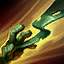

Cursed Touch(Passive)
Amumu's basic attacks Curse enemies for 3 seconds, causing them to take 10% bonus true damage from any magic damage dealt to them.

Bandage Toss(Q)
Amumu tosses a sticky bandage at a target, stunning and damaging the target while he pulls himself to them.
Despair(W)
Overcome by anguish, nearby enemies lose a percentage of their maximum Health each second and have their Curses refreshed.

Tantrum(E)
Permanently reduces the physical damage Amumu would take. Amumu can unleash his rage, dealing damage to surrounding enemies. Each time Amumu is hit, the cooldown on Tantrum is reduced by 0.5 seconds.
Curse of the Sad Mummy(R)
Amumu entangles surrounding enemy units in bandages, applying his Curse, damaging them and rendering them unable to attack or move.